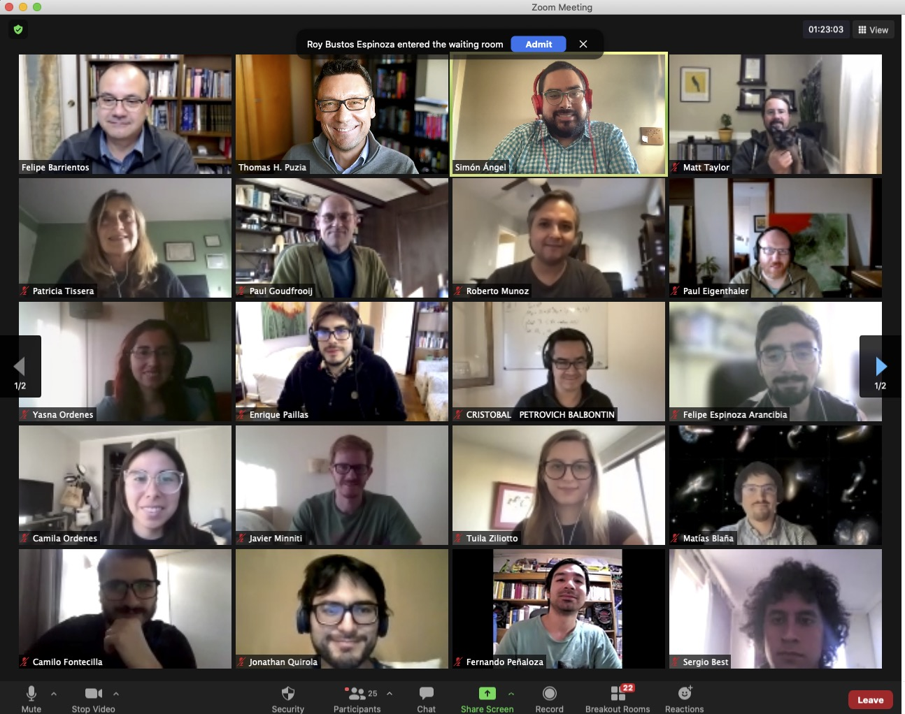
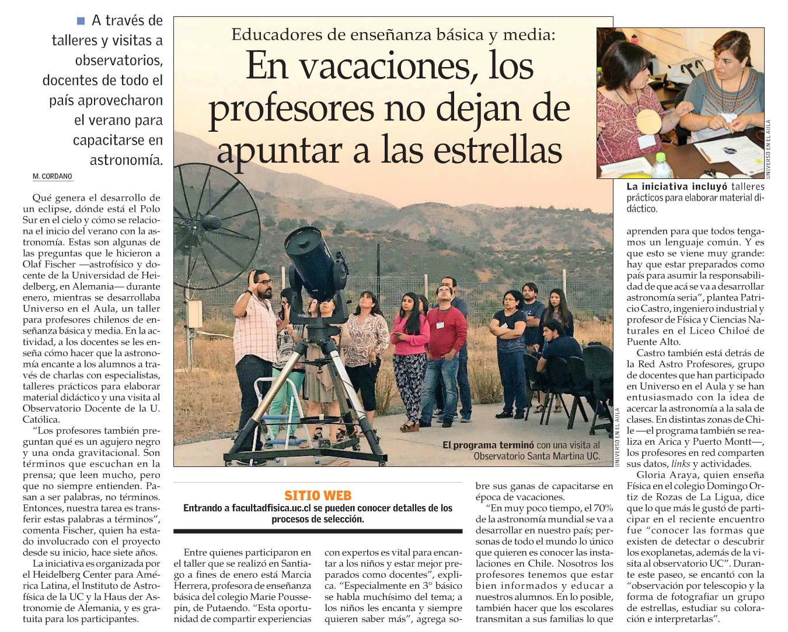
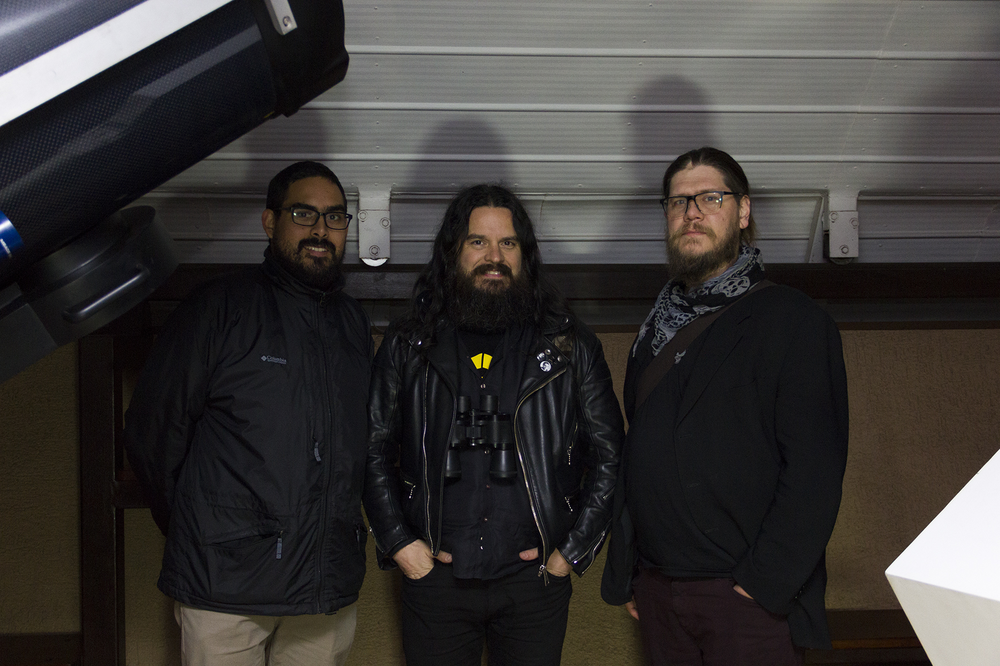
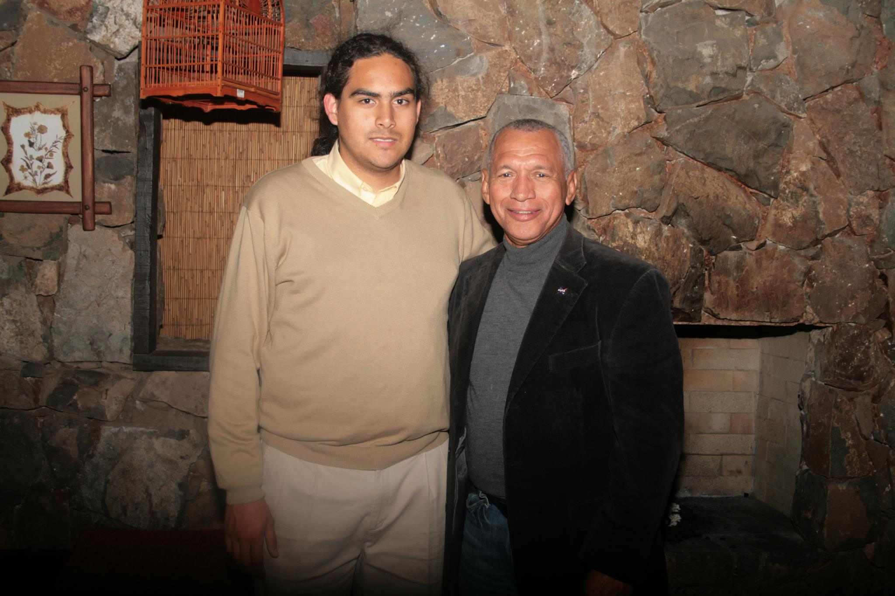
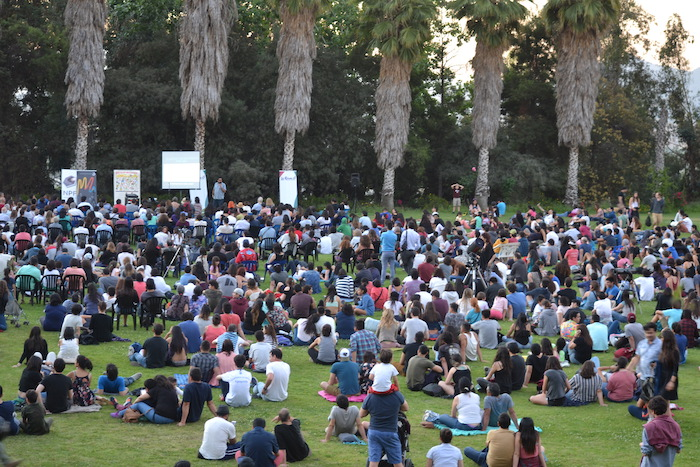
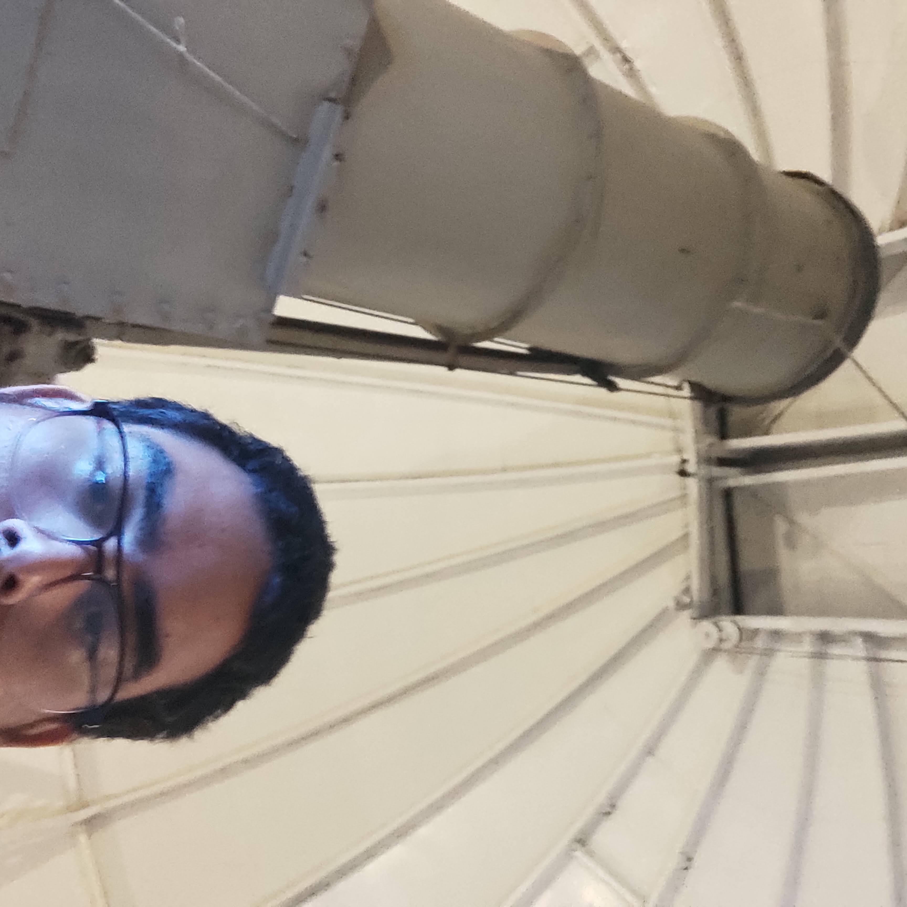
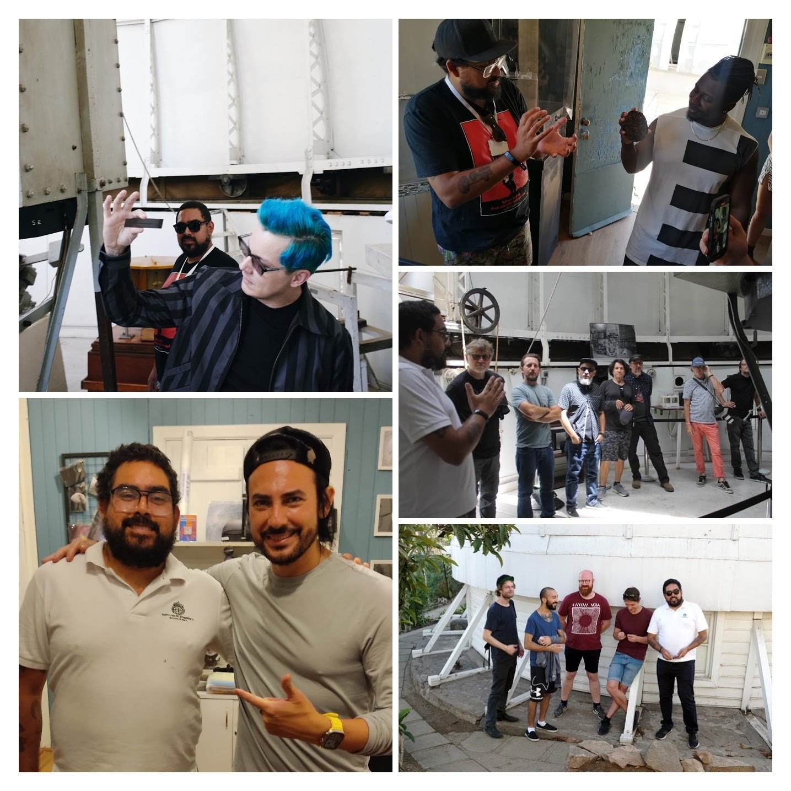

Mi nombre es Simón Ángel (apellido Ángel), soy Licenciado en Astronomía y Doctor en Astrofísica de la PUC. Vivo en San Miguel con mi esposa, Claudia, y tres gatas: Paprika, Piña, y Pascuala.
Entre las cosas que más disfruté mientras hacía el doctorado están enseñar y comunicar mi investigación y otras áreas de la astronomía, y por lo mismo he trabajado en las áreas de educación y difusión de astronomía y ciencias naturales, en particular a niveles escolar y universitario. Actualmente me desempeño como Director Científico en el Observatorio Manuel Foster y comunico ciencia en mis redes sociales.
Creo que la ciencia es el principal motor de desarrollo de los países, y por lo mismo uno de mis objetivos es fomentar la participación y facilitar el acceso a las ciencias a todas las personas sin importar su sexo, género, orientación sexual, nivel socioeconómico, creencias etc., y en especial a quienes han dejado de lado históricamente de esta área del conocimiento.
En mis tiempos libres disfruto cocinar en familia y tocar guitarra. Compongo música de manera muy artesanal, la que puedes encontrar en mi canal de YouTube.
Investigación
Hice mi licenciatura en astronomía en la PUC, y luego entré al doctorado en astrofísica en el mismo lugar. En la imagen (tomada el 2015) se encuentra mi grupo de trabajo en la PUC. De izquierda a derecha: Hongxin Zhang, Karen Ribbeck, Adal Mesa-Delgado, Karla Álamo-Martínez, Marcelo Mora, Paul Eigenthaler, Jincheng Yu, Yasna Ordenes-Briceño, yo, Mia Bovill, Matthew Taylor, Mirko Simunovic, Roberto Muñoz, David Murphy, Thomas Puzia.
En mi tesis de doctorado estudié distintos tipos de sistemas compactos de estrellas y cómo se relacionan con la historia de formación de las galaxias en el cúmulo de galaxias de Coma, con imágenes tomadas con el telescopio espacial Hubble. Más allá de esto, mis intereses en investigación son la evolución estelar, las poblaciones estelares, y la astrofísica galáctica.
Con el telescopio Victor Manuel Blanco de Cerro Tololo. Imagen tomada por Thomas Puzia.

La audiencia de mi defensa de tesis doctoral, el día 26 de abril de 2021.
Educación

Aparición en El Mercurio por participación en los cursos UC de astronomía para docentes
Mi experiencia en educación comenzó en el nivel universitario, haciendo ayudantías en la PUC, de física y principalmente astronomía, el año 2011. Estas ayudantías fueron principalmente teóricas, exceptuando la ayudantía del Observatorio UC. A veces, estas ayudantías me daban la oportunidad de dictar clases, al reemplazar a quien la dictara. Mi experiencia en nivel escolar comenzó al dictar cursos en el programa Penta UC, en dos ocasiones junto a Roberto Muñoz: la primera como ayudante del curso "Del Big Bang al Origen de la vida", y la siguiente como profesor del curso "Astronomía en la Era de la Información", ambos para estudiantes de IV medio.
En 2018 salté a la educación formal e hice clases de física y matemática para IV medio en el colegio Santo Tomás de Ñuñoa (ahora Manquecura). El 2019 y 2020 (año en el que vencía mi habilitación ministerial, al no tener título de pedagogía), fui profesor de física y matemática para toda la enseñanza media en el Colegio Alberiano de Recoleta, entregando mi conocimiento astronómico, y aprendiendo de la comunidad estudiantil.
Desde 2020 he estado apoyando a estudiantes de educación media y universitaria de varias partes del país con clases particulares de física y matemática vía telemática. Si necesitas algo así, ¡hablemos! Los valores son desde $25000 por hora.
Estudiantes de IV medio 2019 del Colegio Alberiano observando el Sol por un telescopio
Astroturismo
Dando una charla en evento del Banco Itaú
Comencé el 2011 a trabajar en turismo astronómico. Ese año llegué al Observatorio Astronómico Andino, ubicado en el km. 8 del Camino a Farellones, donde hacemos turismo y astronomía recreativa para grupos familiares pequeños, así como eventos corporativos masivos. También he participado en el Observatorio Pailalén junto a Ricardo García, comunicador astronómico, con quien he participado en varias otras experiencias de astroturismo.
Al hacer turismo astronómico, enseño ciencia de una manera amigable, con un enfoque práctico y de meter las manos, para entender lo fundamental, más allá de números, tamaños, o distancias: nuestro lugar en el espacio y en el tiempo.
Trabajar en astroturismo me ha llevado a conocer a grandes figuras de distintos ámbitos del conocimiento, como el director de la NASA, Charles Bolden, la expresidenta Michelle Bachelet, o el guitarrista estadounidense Stephen O'Malley de sunn O))).

Con los músicos Stephen O'Malley (sunn O))), KTL, Thorr's Hammer, etc) y Matthew Azevedo (Retribution Body)

Junto a Charles Bolden, en ese entonces (2011) administrador de la NASAJunto con la ex presidenta Michelle Bachelet en el lanzamiento del programa Transforma Turismo
Difusión

Charla "Astrobiología: vida desde la perspectiva cósmica" en Parque Mahuida, noviembre 2018
Desde el 2011 que trabajo en difusión, en el equipo del Instituto de Astrofísica PUC, con el que he podido participar en diversas actividades, desde charlas masivas como la de arriba, hasta una serie para YouTube, Universo en 300 Segundos, en colaboración con Rojizo Comunicaciones, junto a mi amiga y astrónoma Daniela Fernández, quien también es la astrónoma del Observatorio UC. El primer capítulo lo puedes ver acá abajo.
Gracias a Universo en 300 segundos he tenido la oportunidad de aparecer muchas veces en prensa. La más importante fue una entrevista de Andrea Arístegui para el programa Mundo Plus Vanguardia de Mega+. La entrevista la puedes ver acá abajo.
Desde finales de 2020 con la cobertura del eclipse en la Araucanía he tenido más apariciones en prensa comentando fenómenos y noticias astronómicas, y de varias he dejado registro en mis redes sociales. Acá hay un video del eclipse de Luna que cubrimos con el IA el 19 de noviembre de 2021 desde el Centro de Ski El Colorado.
Junto a mi amigo y astrófísico teórico Luis Rodríguez estamos desarrollando el podcast Quantum Astronomy, donde discutimos temas de ciencia y desmentimos temas de pseudociencia. Comenzamos con un plan piloto en YouTube, pero gracias a FulgorLab pasamos a podcast en Spotify, Apple Podcasts e ivoox. Cerramos la cuarta temporada el 2022 y esperamos volver pronto durante 2023 para una quinta temporada.
Entre marzo 2021 y marzo 2022 trabajé como Creador de Contenidos para el Instituto de Astrofísica UC, desarrollando de manera más formal mi interés por la difusión, divulgación y comunicación de la astronomía. Te invito a seguirnos en Twitter, Facebook e Instagram.
Observatorio Manuel Foster

Dentro del domo del Observatorio
El Observatorio Manuel Foster es el primer observatorio astrofísico de Chile y el hemisferio sur, situado en la cumbre del Cerro San Cristóbal desde 1903. Surgió como una extensión al hemisferio sur del Observatorio Lick de la Universidad de California. Luego de una exitosa primera misión, ser comprado por Manuel Foster y donado a la Universidad Católica, y tener que cerrar varias veces, durante junio de 2022 abrio sus puertas nuevamente al público de manera permanente los fines de semana, gracias a un convenio entre la Universidad Católica y el Parquemet. Desde diciembre, formo parte del Directorio del Observatorio, con el cargo de Director Científico.
Las actividades que ofrecemos en el Observatorio Manuel Foster son:
Visitas de público general: los sábados y domingos abrimos el Observatorio a público general que visita el Parque, de 12:00 a 18:00 hrs. Ofrecemos recorrido patrimonial por las zonas históricas del Observatorio, observación al Sol con telescopios equipados con filtro y una exposición de meteoritos. La entrada tiene un valor de $2000 general, $1000 menores de 18 o mayores de 60 años, y gratis menores de 12 años. Sin inscripción previa.
Visitas de colegios y grupos educacionales: durante los días hábiles, tenemos visitas de grupos educacionales que reciben un recorrido por nuestras instalaciones, además de una muestra de experimentos ajustada al currículum de ciencias naturales. Las entradas tenen un valor de $1000 estudiantes y $2000 adultos. Inscripciones acá.
Visitas nocturnas: Disfruta la mejor vista de Santiago de noche y las maravillas del cielo nocturno desde la cumbre del San Cristóbal! Hacemos observación con nuestros telescopios de planetas, estrellas, cúmulos, nebulosas y la Luna según la temporada. Valores de $15000 por persona, $10000 menores de 18 o mayores de 60 años. Inscripciones acá.

Registro de nuestras visitas ilustres musicales
En este Observatorio también hemos recibido visitas insignes de músicos y artistas: durante 2022 nos visitaron Jack White y parte de su banda, Black Francis de Pixies, Primus y equipo, VOLA y equipo, Animals as Leaders y equipo, y Beto Cuevas con su familia. Esperamos ampliar la gama de artistas que nos visitan este 2023.
Si quieres saber más, nos puedes escribir al correo observatoriofoster@gmail.com o seguir al Observatorio en su cuenta de Instagram @observatoriofoster para obtener información actualizada sobre las actividades de difusión que realizamos allá.